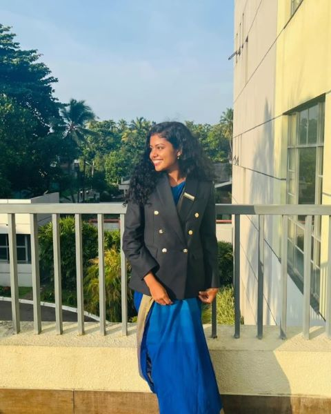

<!DOCTYPE html>
<html lang="en"></html>
<head>
    <meta chartest="UTF-8">
    <meta http-equiv="X-UA-Comatible" Content="IE=edge"> 
    <meta name="viepart" content="width=device-width, initial-scale=1.0">
    <title>Personal Portfolio -kavesha</title>
    <link rel="stylesheet" href="style.css">
    <link rel="stylesheet" href="https://cdnjs.cloudflare.com/ajax/libs/font-awesome/6.0.0/css/all.min.css">
</head>
<body>
<div id="header">
    <div class="container">
        <nav>
            
            <ul>
                <li><a href="#header">Home</a></li>
                <li><a href="#about">About</a></li>
                <li><a href="#contact">Contact</a></li>
                

                
            </ul>
            
        </nav>
        <div class="header-text">
            <p>Computer Engineering Undergraduate</p>
            <h1>Hi,I'm <span>Kaveesha </span><br> from Sri Lanka</h1>
        </div>
    </div>
</div>

<div id="about">
    <div class="container">
        <div class="row">
            <div class="about-col-1">
                
            </div>
            <div class="about-col-2">
                <h1 class="sub-title">About Me</h1>
                <p>
                    As a motivated Computer Engineering undergraduate at General Sir John Kotelawala 
                    Defence University, I am passionate about innovation and problem-solving. With a 
                    strong foundation in both hardware and software, and hands-on experience in 
                    programming languages and engineering tools, I am eager to tackle complex 
                    challenges. Committed to continuous learning and staying updated on emerging 
                    technologies, I thrive in collaborative environments. I am excited to apply my skills to 
                    real-world engineering problems and contribute to innovative solutions.
                </p>
                <div class="tab-titles">
                    <p class="tab-links active-link" onclick="opentab('skills', event)">Skills</p>
                    <p class="tab-links" onclick="opentab('education', event)">Education</p>
                    <p class="tab-links" onclick="opentab('achievement', event)">Achievements</p>
                    <p class="tab-links" onclick="opentab('projects', event)">Projects</p>
                </div>

                <div class="tab-contents active-tab" id="skills">
                    <ul>
                        <li><span>HTML/ CSS/ JavaScript</span></li>
                        <li><span>Java</span></li>
                        <li><span>Python</span></li>
                        <li><span>C++</span></li>
                        <li><span>SQL</span></li>
                        <li><span>Linux</span></li>
                        <li><span>Figma</span></li>
                        <li><span>MATLAB</span></li>
                    </ul>
                </div>

                <div class="tab-contents" id="education">
                    <ul>
                        <li><span>2022 - Present</span> Bachelor of Science in Computer Engineering<br>General Sir John Kotelawala Defence University, Rathmalana</li>
                        <li><span>2017 - 2019</span> G. C. E A/L Examination <br>Wayamba Royal College, Kurunagala<br>Physical Science - C, Physics - C, Chemistry - C</li>
                        <li><span>2015 - 2016</span> G. C. E O/L Examination<br>Wayamba Royal College, Kurunagala<br>A-8, B-1</li>
                    </ul>
                </div>

                <div class="tab-contents" id="achievement">
                    <ul>

                        <li><span>Volunteer Leadership:</span> Volunteer Management Subcommittee Head of WIE Affinity Group at KDU (2024/25).</li>
                        <li><span>Research & Publications:</span> 
                            <ul>
                                <li>Presented research at the 16th International Research Conference of KDU (2023).</li>
                                <li>Innovative Approaches to Protecting Crops from Monkey Threats Using Smart Technology - 5th Student Symposium, Faculty of Computing, General Sir John Kotelawala Defence University, Sri Lanka (2025).</li>
                            </ul>
                        </li>
                        <li><span>Certificates:</span>
                            <ul>
                                <li>Network Administration: Build Core Skills for Network - LinkedIn Learning (2025)</li>
                                <li>Network Management and Security - LinkedIn Learning (2025)</li>
                                <li>Data Analytics Essentials - Cisco Networking Academy (2025)</li>
                                <li>IT Security Foundations: Network Security - LinkedIn Learning (2025)</li>
                                <li>Securing the IoT: Privacy - LinkedIn Learning (2024)</li>
                                <li>Python for Beginners - LinkedIn Learning (2024)</li>
                                <li>IT Essentials - Cisco Networking Academy (2023)</li>
                                <li>CCNA: Introduction to Networks - University of Moratuwa (2024)</li>
                            </ul>
                        </li>
                        
                    </ul>
                </div>

                <div class="tab-contents" id="projects">
                    <ul>
                        <li><span>Personal Diary Mobile App | Android Studio:</span> Developed a personal diary app with text/photo entries, password protection, Firebase cloud backup, and daily inspirational images.</li>
                        <li><span>FabriTrack - IoT-Based Real-Time Monitoring for Fabric Fusing:</span> Real-time fault detection using YOLO, automated reporting, chatbot-assisted maintenance, and Firebase integration.</li>
                        <li><span>Single-Axis Solar Tracking System:</span> Designed an Arduino-based solar tracking system with servo motors and LDRs to improve energy efficiency.</li>
                        <li><span>Voice-Controlled Home Automation System:</span> Built a smart home automation system using NodeMCU ESP8266, a 4-channel relay, and an Android app.</li>
                        <li><span>Facial Oiliness Detection System:</span> Developed an AI-powered image processing system using CNNs for skin texture analysis and skincare recommendations.</li>
                        <li><span>Parallelized Conway’s Game of Life:</span> Used CUDA and MPI to optimize the algorithm for distributed processing and GPU acceleration.</li>
                    </ul>
                </div>

            </div>
        </div>
    </div>
</div>


<div id="contact">
    <div class="container">
        <div class="row">
            <div class="contact-left">
                <h1 class="sub-title">Contact Me</h1>
                <p><i class="fas fa-envelope"></i> kaveeshapiyathilaka@gmail.com</p>
                <p><i class="fas fa-phone"></i> +94741125600</p>
                <div class="social-icons">
                    <a href="https://www.linkedin.com/in/kaveesha-piyathilaka-0444bb280/" target="_blank">
                        <i class="fab fa-linkedin"></i>
                    </a>
                    <a href="https://www.instagram.com/yourprofile" target="_blank">
                        <i class="fab fa-instagram"></i>
                    </a>
                </div>
                <a href="images/Kaveesha Piyathilaka (CV).pdf" download class="btn btn2">Download CV</a>
            </div>

            <div class="contact-right">
                <form>
                    <input type="text" name="Name" placeholder="Your Name" required>
                    <input type="email" name="Email" placeholder="Your Email" required>
                    <textarea name="Message" rows="6" placeholder="Your Message"></textarea>
                    <button type="submit" class="btn btn2">Submit</button>
                </form>
            </div>
        </div>
    </div>
    <div class="copyright">
        <p>Kaveesha Piyathilaka</p> 
    </div>
</div>

<script>
    var tablinks = document.getElementsByClassName("tab-links");
    var tabcontents = document.getElementsByClassName("tab-contents");

    function opentab(tabname, event) {
        for (let tablink of tablinks) {
            tablink.classList.remove("active-link");
        }
        for (let tabcontent of tabcontents) {
            tabcontent.classList.remove("active-tab");
        }
        event.currentTarget.classList.add("active-link");
        document.getElementById(tabname).classList.add("active-tab");
    }
</script>


</body>
</html>
